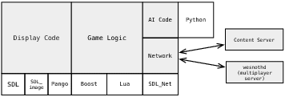

A
Arquitetura de Aplicações Open Source
Amy Brown e Greg Wilson (eds.)
ISBN
978-1-257-63801-7
Licença
/ Comprar
/ Notícias
/ Contribuições
/ FAQ
|
|
A
Arquitetura de Aplicações Open Source
|
Programação tente a ser considerada simplesmente uma atividade de resolução de problemas, onde o desenvolvedor tem um problema e o código tem uma solução. Beleza é normalmente julgada pela elegância ou efetividade da implementação técnica; este livro está repleto com excelentes exemplos. Ainda além das funções computacionais imediatas, o código pode ter um profundo efeito na vida das pessoas. Ele pode inspirar pessoas a participar e criar um novo contexto. Infelizmente, existem sérias barreiras que impedem indivíduos de participar em um projeto.
Programming tends to be considered a straightforward problem solving activity; a developer has a requirement and codes a solution.
Beauty is often judged on the technical implementation's elegance or effectiveness; this book is replete with excellent examples. Yet beyond its immediate computing functions, code can have a profound effect on people's lives. It can inspire people to participate and create new content. Unfortunately, serious barriers exist that prevent individuals from participating in a project.
A maioria das linguagens de programação pede uma alta capacitação técnica para ser utilizada, o que as deixa fora do alcance de muitos. Adicionalmente, melhorar a acessibilidade do código é tecnicamente difícil e não é essencial para muitos programadores. Isto raramente se traduz em scripts de codigo limpo ou soluções de programação inteligentes. Atingir acessibilidade requer antecipação da arquitetura do projeto e do programa, o que normalmente é contra-intuitivo para os padrões normais de programação. Além disso, a maioria dos projetos depende de estabelecer uma equipe de profissionais capacitada de quem se espera um trabalho de alto nível. Eles não requerem recursos adicionais de programação. Portanto, acessibilidade de código fica para mais adiante, se chegar a ser considerada.
Most programming languages require significant technical expertise to utilize, which is out of reach for many. In addition, enhancing the accessibility of code is technically difficult and is not necessary for many programs. It rarely translates into neat coding scripts or clever programming solutions. Achieving accessibility requires considerable forethought in project and program design, which often runs counter-intuitive to normal programming standards. Moreover most projects rely upon an established staff of skilled professionals that are expected to operate at a reasonably high level. They do not require additional programming resources. Thus, code accessibility becomes an afterthought, if considered at all.
Nosso projeto, a Batalha por Wesnoth, tenta endereçar este problema desde o início. O programa é um jogo estratégia e fantasia, produzido no modelo de código livre, baseado na licença GPL2. Ele tem atingido um sucesso moderado, com acima de quatro milhoes de downloads até o momento da escrita deste texto. Apesar desta métrica impressionante, nós acreditamos que a real beleza de nosso projeto é o modelo de desenvolvimento que permite que grupos de voluntários com diversos níveis de capacitação possam interagir de forma produtiva.
Melhorar a inteligibilidade não era um objetivo vago definido pelos desenvolvedores, era visto como essencial para a sobrevivência do projeto. A abordagem de código livre do Wesnoth imaginava que o projeto poderia não receber imediatamente um número grande de desenvolvedores de alto nível. Tornar o projeto acessível para um grande número de contribuidores, com variados níveis de proficiência poderia garantir a viabilidade do projeto à longo-prazo.
Enhancing accessibility was not a vague objective set by developers, it was viewed as essential for the project's survival. Wesnoth's open source approach meant that the project could not immediately expect large numbers of highly skilled developers. Making the project accessible to a wide a number of contributors, with varying skill levels, would ensure its long-term viability.
Nossos desenvolvedores tem tentado definir as fundações para a ampliação da acessibilidade desde as primeiras iterações. Isto deveria ter inegáveis consequências para todos os aspectos da arquitetura de programção. As principais decisões foram feitas com este objetivo em mente. Neste capítulo será apresentado um estudo aprofundado que examina nosso programa com foco nos esforços para aumentar esta acessibilidade.
A primeira parte deste capítulo apresenta uma visão geral sobre a programação do projeto, abrangendo a linguagem utilizada, dependências e arquitetura. A segunda parte irá focar na linguagem de armazenamento de dados única do Wesnoth, conhecida como Wesnoth Markup Language (WML). Serão explicadas as funções específicas do WML, com uma enfase especial nos seus efeitos em unidades dos jogos. A sesão seguinte cobre a implementação para multi-jogador e programas externos. O capítulo termina com algumas observações finais sobre os desafios e a ampliação da participação de desenvolvedores.
O núcleo do Wesnoth foi escrito em C++, totalizando por volta de 200 mil linhas no momento desta publicação. Ele representa a parte principal do jogo, aproximadamente metade do código total, sem nenhum conteúdo. O programa também permite que o conteúdo do jogo seja definido em uma única linguagem conhecida como Wesnoth Markup Language (WML). O jogo conta com outras 250 mil linhas de código WML. Esta proporção tem alterado durante a existência do projeto. Enquanto o programa amadurece, o conteúdo de jogo que é escrito em C++ tem sido reescrito, de forma que WML pode ser usado para definir sua operação. A Figura 25.1 tráz uma visão simplificada da arquitetura do programa, areas destacadas são mantidas pelos desenvolvedores Wesnoth, enquanto áreas brancas são dependências externas.

Figure 25.1: Arquitetura do programa
Em geral, as tentativas dos projetos em minimizar dependências na maioria dos casos de forma a maximizar a portabilidade do aplicativo. Isto traz o benefício adicional de reduzir a complixidade do programa, e diminuir a ncessidade de desenvolvedores para aprender as nuancias do grande número de APIs de terceiros. Ao mesmo tempo, o uso controlado de algumas dependências pode atingir o mesmo efeito. Por exemplo, Wesnoth usa o Simple Directmedia Layer (SDL) para vídeo, controle de E/S e manupulação de eventos. Ele foi escolhido por ser fácil usar e prover uma interface comum de E/S para várias plataformas. Isto permite que ele seja portável para uma ampla lista de plataformas, outra alternativa seria codificar para APIs específicas em diferentes plataformas. Entretanto isto tem um preço, é mais difícil de tirar vantagens de funcionalidades específicas de alguma plataforma. SDL também tem uma família de bibliotecas que acompanham que são usados pela Wesnoth para vários objetivos:
SDL_Mixer para audio e som
SDL_Image para carregar imagens PNG e outros formatos de imagem
SDL_Net para entrada e saída de rede
Adicionalmente, Wesnoth utiliza várias outras bibliotecas:
Otimizada para uma variedade de funções avançadas de C++
Pango e Cairo para fontes internacionalizadas
zlib para compressão
Python e Lua para programação de scripts
GNU gettext para internacionalização
Na arquitetura do Wesnoth, o uso de objetos WML, como dicionários string com nós filhos – bastante onipresente. Vários objetos podem ser contruidos a partir de nós WML, e também se serializar como um nó WML. Algumas partes do motor mantém dados no formato baseado em dicionários WML, interpretando diretamente ao invés de parseando isso em estruturas de dados C++.
Wesnoth utiliza vários subsistemas importantes, a maioria dos quais são tão auto-contídos quanto possível. Esta estrutura segmentada tem vantagens para acessibilidade. Uma parte interessada pode facilmente trabalhar um código em uma área específica e introduzir mudanças sem demandar o resto do programa. Uma subdivisão inclui:
Um parseador WML com pre-processamento
Módulos de E/S básica que abstraem bibliotecas subjacentes e chamadas de sistema – um módulo de vídel, um módulo de som, um módulo de rede
Um módulo GUI contendo implementação de widget de botões, listas, menus e etc.
Um módulo de apresentação para o quadro do jogo, unidades animações e etc.
Um módulo de IA
Um módulo pathfinding que inclui várias funções utilitárias para lidar com um quadro de jogo hexagonal
Um módulo de geração de mapas para gerar diferentes tipos de mapas randômicos.
Existem também diferentes módulos para controlar diferentes partes do fluxo do jogo:
O módulo titlescreen, para controlar a apresentação da tela inicial.
O módulo storyline, para apresentar sequência de corte de cena.
O módulo lobby, para apresentar e permitir a configuração de jogos no servidor multiplayer.
O módulo “play game” que controla a jogabilidade principal.
O módulo “play game” e o módulo de apresentação principal são os maiores dentro do Wesnoth. Seu objetivo é pouco definidas, porque suas funções tendem a mudar sempre e portanto são difíceis de ter uma clara especificação. Consequentemente, o módulo tem normalmente tem o perigo de apresentar o anti-padrão Blob sobre seus programas historicamente, tornando-se grandes segmento dominantes sem um comportamento bem definido. O código nos módulos display e play game são regularmente revistos para ver se algo pode ser separado em outro módulo.
Existe também funcionalidades antigas que são parte do projeto com um todo, mas estão separadas do programa principal. Isto inclui o servidor multiplayer que possibilita o jogo em rede, bem como o servidor de conteúdo que possibilita usuários fazer upload do seu conteúdo para um servidor comum visando compartilhar com outros. Ambos são escritos em C++.
Como um motor de jogos extensivo, Wesnoth utiliza uma linguagem de dados simples para armazenar e recuperar todos os dados do jogo. Apesar de ter se considerado XML inicialmente, nós decidimos que nós deveríamos buscar algo um pouco mais amistoso para usuários não técnicos, e um pouco mais relaxado com respeito ao uso de dados visuais. Portanto, nós desenvolvemos nossa própria linguagem de dados, chamada Wesnoth Markup Language (WML). Isto foi planejado com vistas ao usuário menos técnico, esperando que mesmo usuários que achem Python e HTML intimidador possam ser capazes de entender arquivos WML. Todos os dados do jogo Wesnoth são armazenados em WML, incluindo definições de unidades, campanhas, cenários, definições da GUI, e outras configurações da lógica do jogo.
A WML compartilha os mesmos atributos básicos do XML: elementos e atributos, enquanto ela não suporta texto dentro dos elementos. Atributos WML são representados simplesmente como um dicionário mapeando strings para strings, com a lógica da programação responsável pela interpretação dos atributos. Um exemplo simples de WML é uma definição truncada para a unidade Elvish Fighter dentro do jogo:
[unit_type]
id=Elvish Fighter
name= _ "Elvish Fighter"
race=elf
image="units/elves-wood/fighter.png"
profile="portraits/elves/fighter.png"
hitpoints=33
movement_type=woodland
movement=5
experience=40
level=1
alignment=neutral
advances_to=Elvish Captain,Elvish Hero
cost=14
usage=fighter
{LESS_NIMBLE_ELF}
[attack]
name=sword
description=_"sword"
icon=attacks/sword-elven.png
type=blade
range=melee
damage=5
number=4
[/attack]
[/unit_type]Por considerar internacionalização importante no Wesnoth, WML tem suporte direto para isso: valores de atributos que apresentam um underscore prefixado são traduzíveis. Qualquer string traduzível é convertida usando o GNU gettext para a versão traduzida quando o WML é interpretado.
Ao invés de ter diferentes documentos WML, Wesnoth optou pela abordagem de que todos os dados do jogo sejam apresentados para o engine do jogo em um único documento. Isto permite uma única variável global possa manter o documento, e quando o jogo for carregado todas as definições de unidades, por exemplo, são carregadas através da procura por elementos com nome unit_type dentro do elemento units.
Apesar de todos os dados serem armazenados em um único documento WML conceitual, este deverá ser unwieldy para ter tudo em um único arquivo. Wesnoth então suporta um pré-processador que é executado sobre todo o WML antes da interpretação. Este proprocessador permite um arquivo a incluir o conteúdo de outro arquivo, ou um diretório inteiro. Por exemplo:
{gui/default/window/}irá incluir todos os arquivos .cfg de dentro do diretório gui/default/window/.
Considerando que WML pode se tornar muito extensa, o pre-processador também permite que macros sejam definidas para condensar os conceitos. Por exemplo, a macro {LESS_NIMBLE_ELF} na definição do Elvish Fighter é uma chamada para a macro que torna certas unidades elfo menos nimble em certas condições, como quando eles estão parados em uma floresta:
#define LESS_NIMBLE_ELF
[defense]
forest=40
[/defense]
#enddefEste projeto tem como vantagem tornar o motor desacoplado de como o documento WML é quebrado em arquivos. É responsibilidade dos autores WML decidir como estruturar e dividir todos os dados do jogo em diferentes arquivos e diretórios.
Quando o motor do jogo carrega o documento WML, ele também define alguns símbolos do pre-processador, de acordo com várias configurações do jogo. Por exemplo, uma campanha Wesnoth pode definir diversas configurações de dificuldade, com cada configuração de dificuldade resultando em um símbolo de preprocessamento diferente sendo definido. Como um exemplo, um modo comum de variar a dificuldade é variando a quantidade de recursos dado para um oponente (representado por ouro). Para facilitar isto, uma macro WML é definida assim:
#define GOLD EASY_AMOUNT NORMAL_AMOUNT HARD_AMOUNT
#ifdef EASY
gold={EASY_AMOUNT}
#endif
#ifdef NORMAL
gold={NORMAL_AMOUNT}
#endif
#ifdef HARD
gold={HARD_AMOUNT}
#endif
#enddefEsta macro pode ser invocada usando, por exemplo, {GOLD 50 100 200} dentro da definição de um oponente para definir quanto ouro o oponente tem baseado no grau de dificuldade.
Considerando que o WML seja procesado condicionalmente, se algum dos símbolos providos pelo documento WML mudar durante a execução do motor Wesnoth, todo o documento WML precisa ser recarregado e processado. Por exemplo, quando o usuário inicia o jogo, o documento WML é carregado e as campanhas disponíveis entre outras coisas são carregadas. Mas então, se o usuário escolhe para começar uma campanha e escolhe um certo nível de dificuldade, Easy por exemplo, então todo o documento terá que ser recarregado com o nível EASY definido.
Este projeto é conveniente no qual um único documento contém todos os dados do jogo, e que símbolos possam permitir configuração simples do documento WML. Entretanto, como um projeto bem sucedido, mais e mais conteúdo torna-se disponível para Wesnoth, incluindo muito conteúdo que pode ser descido via internet- onde todo termina inserido na árvore de documentos principal – o que implica que documentos WML tenham um tamanho de vários megabytes. Isto tem se tornado um problema de performance para Wesnoth: Carregar os documentos pode tormar de um minuto em alguns computadores, causando demoras em-jogo cada vez que um documento precisa ser recarregado. Adicionalmente, é utilizado uma quantidade substancial de memória. Algumas medidas são usadas para contabilizar isso: quando uma campanha é carregada, ela tem um símbolo único para aquela campanha definido no preprocessador. Isto significa que qualquer conteúdo específico para a campanha pode usar #ifdef para somente ser usado quando a campanha for necessária.
Adicionalmente, Wesnoth usa um sistema de cache para dinamizar a versão totalmente preprocessada do documento WML para um dado conjunto de definições principais. Naturalmente este sistema de cache precisa inspecionar a timestamp de todos os arquivos WML para para que se algum tiver sido alterado, o documento cacheado seja reprocessado.
Os protagonistas no Wesnoth são suas unidades, Um Elvish Fighter e um Elvish Shaman devem lutar contra um Troll Warrior e um Orcish Grunt. Todas unidades compartilham o mesmo comportamento básico, entretanto muitas tem habilidades especiais que alteram o fluxo normal da jogabilidade. Por exemplo, um Troll regenera um pouco de sua saúdo a cada rodada, um Elvish Shaman torna lentos seus oponentes com uma raiz encantada, e um Wose é invisível dentro da floresta.
Qual é a melhor forma para representar isto em um motor de jogo? É tentador fazer uma classe para a unidade base em C++, com diferentes unidades derivadas dela. Por exemplo, uma casse da unidade Wose poderia derivar desta unidade, e cada unidade poderia ter uma função virtual bool is_invisible() const, que retorna falso, a qual a unidade Wose sobrescreve, retornando verdadeiro se a unidade estiver na floresta.
Tal abordagem pode funcionar razoavelmente bem para um jogo com um conjunto limitado de regras. Infelizmente Wesnoth é um jogo bem extenso e tal abordagem não é facilmente extensível. Se uma pessoa quiser adicionar um novo tivo de unidade usando esta abordagem, isso requer adicionar uma nova classe C++ para o jogo. Adicionalmente, isto não permite diferentes características serem combinadas também: e se você tiver uma unidade que regenerada, puder desacelerar inimigos com uma rede, e ficar invisível em uma floresta? Você teria que escrever uma classe totalmente nova que duplicasse o código de outras classes.
As unidades de sistema do Wesnoth não usam herança nenhuma para cumprir suas tarefas. Ao invés disso, elas usam uma classe unidade para representar instâncias de unidades, e uma classe unit_type, que representa as características imutáveis que todas as unidades de um certo tipo compartilham. A classe unitária tem uma referência para o tipo de objeto que ela é. Todos os possíveis objetos unit_type são armazenados em um dicionário mantido globalmente que é carregado quando o documento WML principal é carregado.
Um tipo de unidade tem uma lista de todas as habilidades que uma unidade possui. Por exemplo, um Troll tem a habilidade de “regeneração” que o permite curar a cada rodada. Um Saurian Skirmisher tem a habilidade “skirmisher” que o permite mover entre as linhas inimigas. Reconhecer estas habilidades é construído no engine – por exemplo, algorítimos de pathfinding devem checar se a unidades tem o flag “skirmisher” ligado para ver se ele pode mover livremente pelas linhas inimigas. Esta abordagem permite aos indivíduos adicionar novas unidades, que tenham alguma combinação de habilidades feitas pela engine, somente editando o WML. É claro, isso não permite adicionar habilidades completamente novas e comportamento novo sem modificar o engine.
Adicionalmente, cada unidade no Wesnoth pode ter qualquer quantidade de formas de ataque. Por exemplo, um Elvish Archer tem um arco de longo alcance e também uma espada de ataque de curso alcance. Cada um apresenta diferentes quantidades de dano e características. Pra representar um ataque, existem classes attack_type, e cada instancia unit_type tem uma lista de possíveis attack_type.
Para dar cada unidade mais caráter, Wesnoth tem uma funcionalidade conhecida como traits. Após recrutamento, a maioria das unidades são associadas a dois traits randomicamente de uma lista pré-definida. Por exemplo, uma unidade forte causa mais dano com seu melee attacks, enquanto uma unidade inteligente precisa menos experiência antes de subir de nível. Também, é possível para unidades adquirir equipamentos durante o jogo que as tornem mais poderosas. Por exemplo, deve haver uma espada que a unidade possa carregar que torne seus ataques mais danosos. Para implementar traits e equipamentos Wesnoth permite modificações nas unidades, que são alterações definidas no WML em estatísticas das unidades. As modificações podem inclusive ser aplicadas para um certo tipo de ataque. Por exemplo, o strong trait dá as unidades strong mais capacidade de dano quando atacando corpo a corpo, mas não quando usando um ataque à distância.
Permitir comportamento de unidades completamente configurável com WML seria um objetivo admirável, portanto é educativo considerar porque Wesnoth nunca atingiu tal objetivo. WML poderia precisar ser muito mais flexível do que ela é se ela permitisse comportamento de unidades arbitrário. Ao invés disso sendo uma linguagem orientada a dados, WML poderia ter que ser estendida em uma linguagem de programação plena e que poderia ser intimidadora para vários aspirantes contribuidores.
Adicionalmente, o Wesnoth AI, que é desenvolvido em C++, reconhece as habilidades presentes no jogo. Ela leva em conta a regeneração, invisibilidade, e assim por diante, e tenta manobrar suas unidades para tirar o melhor proveito destas diferentes habilidades. Mesmo que uma habilidade da unidade pudesse ser criada usando WML, seria difícil fazer AI sofisticada o suficiente para reconhecer essa capacidade e tirar proveito dela. Implementar uma habilidade sem ser controlada pela AI não seria uma implementação satisfatória. Da mesma forma, implementar uma habilidade em WML e depois ter que modificar a AI em C++ para controlar a habilidade seria um contrassenso. Portanto, ter unidades definíveis em WML, porém tendo habilidades escritas no código da engine é considerado um compromisso razoável que funciona melhor para os requisitos específicos do Wesnoth.
A implementação multiplayer do Wesnoth utiliza uma abordagem tão simples quanto possível para implementar múltiplos jogadores. Se tenta mitigar a possibilidade de ataques maliciosos no servidor, mas não se faz um esforço serio para evitar trapassas. Qualquer movimento que é feito no jogo Wesnoth— movimento de uma unidade atacando um inimigo, recrutando uma unidade, assim por diante— pode ser salvo como um nó WML. Por exemplo, um comando para mover uma unidade pode ser salvo em um WML como o seguinte:
[move]
x="11,11,10,9,8,7"
y="6,7,7,8,8,9"
[/move]Isto mostra o caminho que uma unidade segue como um resultado dos comandos do jogador. O jogo então tem a capacidade de executar qualquer comando WML submetido. Isso é muito útil porque significa que um replay completo pode ser salvo, armazenando o estado inicial do jogo e então todos os comandos subsequentes. Ser capaz de rever jogos é útil tanto para os jogadores se observarem jogando, quanto para auxiliar em certos tipos de relatórios de bugs.
Nós decidimos que a comunidade deveria tentar focar em jogos amistosos e casuais para a implementação do Wesnoth multiplayer via rede. Ao invés de uma batalha técnica contra crackers anti-sociais tentando comprometer sistemas de prevenção a trapassas o projeto simplesmente não tenta arduamente prevenir trapassas. Uma análise de outros jogos multiplayer indica que sistemas de ranqueamento competitivo foram a ponto central para comportamento anti-social. Prevenir deliberadamente tais funções no servidor reduziu grandemente a motivação para indivíduos trapacearem. Além disso, os moderadores tentam encorajar uma comunidade positiva de jogadores onde indivíduos desenvolvem relação pessoal com outros jogadores e jogam com eles. Isto estabeleceu uma enfase no relacionamento ao invés da competição. Como resultado estes esforços tem sido considerado bem sucedidos, enquanto esforços para hackear maliciosamente o jogo tem sido normalmente isolados.
A implementação multiplayer do Wesnoth consistem em uma infraestrutura cliente-servidor típica. Um servidor, conhecido como wesnothd, acceita conexões vindas de clientes Wesnoth, e envia para o cliente um resumo dos jogos disponíveis. O Wesnoth irá apresentar um 'lobby' para o jogador que pode escolher um jogo para se juntar ou criar um novo jogo para outros se juntarem. Uma vez que os jogadores estejam em um jogo e o jogo comece, cada instância de Wesnoth irá gerar comandos WML descrevendo ações realizadas pelos jogadores. Estes comandos são enviados para o servidor, e então o servidor as retransmite para todos os outros clientes naquele jogo. O servidor irá portanto agir como um retransmissor bem simples e leve. Desde que Wesnoth seja um jogo baseado em turnos, TCP/IP é usado para todas as comunicações via rede.
Este sistema também permite observadores facilmente assistirem um jogo. Um observador pode se juntar a um jogo sendo executado, neste caso o servidor irá enviar o WML que representa o estado inicial do jogo, seguido pelo histórico de comandos que tenha sido executado desde o estado inicial. Isto permite a novos observadores definir a velocidade para chegar ao estado atual do jogo. Eles podem ver a história do jogo, entretanto demora para que o observador chegue à posição atual do jogo. A história do jogo pode ser adiantada, entretanto mesmo assim isto toma tempo. A alternativa poderia ser que um dos clientes gerasse uma cópia do estado atual do WML e enviasse ao novo observador, entretanto esta abordagem poderia prejudicar os clientes com sobrecarga de observadores, e poderia facilitar ataques de denial-of-service através de muitos observadores ligados no jogo.
É claro, desde que clientes Wesnoth não compartilham qualquer tipo de estado do jogo entre sí, somente enviando comandos, é importante que eles concordem com regras sobre o jogo. O servidor é segmentado por versão, com somente jogadores usando a mesma versão ou versões capazes de interagir. Jogadores são imediatamente alertados se seus clientes perderem sincronismo com outros. Isto também é um sistema útil para prevenir trapassas. Embora seja bem fácil para jogadores trapacear modificando seus clientes, qualquer diferença entre versões será imediatamente sinalizada para os jogadores para que possam lidar com isso.
Nós acreditamos que a beleza da batalha de Wesnoth como um programa seja como o código foi tornado acessível para uma variedade de indivíduos. Para atingir este objetivo, o projeto sempre assumiu compromissos para não parecer elegante de alguma forma. Deve ser observado que muitos dos programadores mais talentosos do projeto desaprovam WML por sua sintaxe ineficiente. Ainda assim, este compromisso possibilita o grande sucesso do projeto. Hoje Wesnoth pode contar com centenas de campanhas e eras feitas por usuários, criadas por usuários com pouca ou nenhuma experiência em programação. Além disso, ele tem inspirado um número de pessoas a tentar programação como profissão, usando o projeto como uma ferramenta de aprendizado. Estes são resultados tangíveis que poucos programas podem igualar.
Uma das lições chave que um leitor poderia observar além do esforço Wesnoth é considerar os desafios enfrentados por programadores menos habilidosos. Isto requer uma consciência sobre o que impede contribuidores de verdadeiramente realizarem codificação e desenvolverem suas habilidades. Por exemplo um indivíduo pode querer contribuir para o programa mas não ter habilidade em programação. Editores dedicados como emacs ou vim apresentam uma curva de aprendizado significativa que pode ser assustadora para tais indivíduos. Portanto WML foi projetada para permitir que um simples editor de textos possa abrir seus arquivos, dando a qualquer um as ferramentas para contribuir.
Entretanto, aumentar a acessibilidade à base de código não é um objetivo simples de ser atingido. Não existem regras rápidas e objetivas para aumentar a acessibilidade do código. Ao invés, isso requer um equilíbrio entre diferentes considerações, que podem ter consequências negativas que a comunidade precisa conhecer. Isso é aparente em como o programa lidou com dependências. Em alguns casos, dependências podem na verdade aumentar as barreiras para participação, enquanto em outros casos elas podem permitir que pessoas contribuam mais facilmente. Cada questão precisa ser considerada caso a caso.
Devemos também ser cautelosos para não exagerar o sucesso do Wesnoth. O projeto aproveita algumas vantagens que não são facilmente reproduzidas por outros programas. Tornar código acessível para um público amplo é em parte resultado das configurações dos programas. Legalmente a licença GNU permite que alguém abra um arquivo existente, entenda como ele funciona e faça mudanças. Indivíduos são encorajados para experimentar, aprender e compartilhar nesta cultura, que pode não ser apropriada para outros programas. Entretanto esperamos que haja certos elementos que possam se provar úteis para todos os desenvolvedores e ajudá-los em seu esforço para encontrar beleza na codificação.